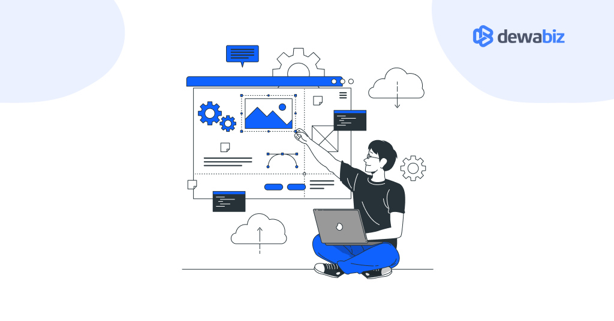

Penyedia layanan hosting dan domain di Indonesia Di Indonesia, banyak penyedia layanan domain dan hosting yang sudah dikenal dan menawarkan berbagai paket serta fitur yang sesuai dengan kebutuhan website lokal. Misalnya, DomaiNesia yang berdiri sejak 2009, menyediakan layanan registrasi domain murah dan web hosting berbasis cloud dengan teknologi terkini seperti SSD NVMe, backup otomatis, pilihan lokasi server di Indonesia atau Singapura, serta panel cPanel yang familiar bagi banyak pengguna. ([domainesia.com] Paket hosting-nya ditujukan untuk berbagai skala, mulai dari pribadi hingga bisnis, dengan dukungan tim yang aktif 24 jam. Layanan lainnya seperti HostNesia menawarkan paket hosting dan domain dengan harga kompetitif — contohnya domain “.my.id” mulai dari puluhan ribu rupiah per tahun, dukungan pelanggan 24/7 dan garansi uang kembali dalam 30 hari. ([hostnesia.id] Ada juga penyedia seperti IndoWebsite yang menawarkan aktivasi layanan segera setelah pembayaran, backup data secara rutin, dan fitur gratis seperti SSL untuk paket tertentu. ([IndoWebsite] Keunggulan utama badan lokal ini adalah kemudahan transaksi (metode pembayaran bank lokal, rupiah), dukungan teknis dalam bahasa Indonesia, dan server yang dekat secara geografis dengan pengunjung dari Indonesia, yang dapat membantu kecepatan akses. Namun, beberapa catatan yang sering disebut adalah: saat promosi bagus, tapi biaya perpanjangan (renewal) terkadang meningkat, dan pilihan paket murah terkadang memiliki keterbatasan fitur dibandingkan paket premium.
Penyedia layanan hosting dan domain di Luar Negeri Di ranah internasional, terdapat banyak penyedia domain dan hosting yang menjangkau pengguna global dengan zona harga berbeda, fitur internasional, dan metode pembayaran seperti kartu kredit atau PayPal. Contoh yang cukup dikenal adalah GoDaddy, yang merupakan registrar domain terbesar di dunia, menawarkan ratusan ekstensi domain (.com, .net, .blog, .shop, dll), hosting bersama (shared hosting), VPS hingga server dedicated, serta layanan tambahan seperti pembuat website, e-commerce, dan pemasaran online. ([Chamber Of Commerce] Kelebihannya: sangat cocok bagi pengguna yang ingin skala internasional, kontrol panel yang mudah digunakan, dan akses ke banyak ekstensi domain. Namun, kekurangannya antara lain: harga perpanjangan sering lebih tinggi dibandingkan periode pertama, upselling yang agresif, dan beberapa pengguna menyebut performa untuk paket paling murah kurang konsisten. ([kmoonler.com] Ada juga penyedia seperti Gandi dari Prancis yang memiliki reputasi kuat dalam domain dan hosting, mendukung domain internasional besar, VPS cloud, dan dikenal karena komitmennya pada open source dan privasi. ([Wikipedia] Atau Hetzner dari Jerman yang menyediakan hosting performa tinggi untuk pasar Eropa dan global, termasuk registrasi domain, VPS, server dedicated, dan colocation. ([Wikipedia] Karena berskala global, maka aspek seperti lokasi data center (jarak ke pengunjung), regulasi data, harga valuta asing, dukungan teknis (bahasa, zona waktu) dan metode pembayaran internasional harus diperhitungkan.
Contoh penyedia layanan di Indonesia:
- Niagahoster
- Hostinger Indonesia
- Domainesia
- Rumahweb
Contoh penyedia layanan luar negeri:
- GoDaddy
- Bluehost
- HostGator
- Namecheap .